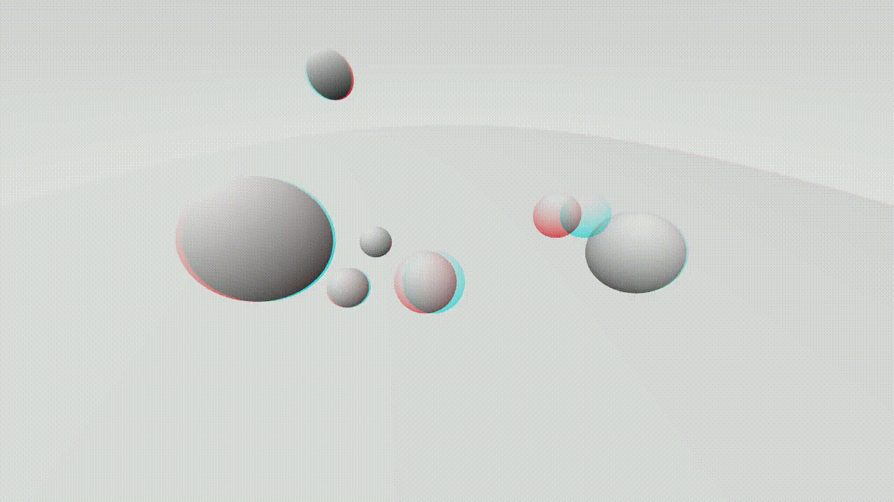

Questo progetto implementa miglioramenti per la camera:
L'anaglifo rosso-ciano è implementato convertendo le viste dell'occhio sinistro e destro in scala di grigi utilizzando i pesi di luminanza dello standard PAL Nativo (0.222 R + 0.707 G + 0.071 B).
Per comporre lo stereogramma, la luminanza dell'occhio sinistro viene assegnata esclusivamente al canale rosso, mentre la luminanza dell'occhio destro viene assegnata sia al canale verde che a quello blu (ciano). Il metodo toAnaglyph() esegue questo isolamento dei canali:
color toAnaglyph(color rayColor, bool isLeft) {
// Ciascun canale viene moltiplicato per una costante che simula la percezione umana del rosso, verde e blu.
float gray = 0.222f * rayColor[0] + 0.707f * rayColor[1] + 0.071f * rayColor[2];
rayColor[0] = isLeft ? gray : 0.0f;
rayColor[1] = isLeft ? 0.0f : gray;
rayColor[2] = isLeft ? 0.0f : gray;
return rayColor;
}La pipeline di rendering suddivide il punto di vista in due posizioni della camera corrispondenti all'occhio sinistro e all'occhio destro. I due punti di vista sono separati da un offset orizzontale e, che rappresenta la distanza interoculare:
void render(const hittable& world, const bool toggle_anaglyph = false, const float e = 0.0) {
...
if (toggle_anaglyph) {
ray rr = get_ray(i, j, e);
ray rl = get_ray(i, j, -e);
pixel_color += toAnaglyph(ray_color(rl, world, true), true) + toAnaglyph(ray_color(rr, world, true), false);
}
...
}
ray get_ray(int i, int j, float e = 0.0) const {
// Ottiene un raggio della camera campionato casualmente per il pixel in posizione i,j.
vec3 pixel_center = pixel00_loc + (i * pixel_delta_u) + (j * pixel_delta_v);
vec3 pixel_sample = pixel_center + pixel_sample_square();
point3 ray_origin = camera_center + 0.5 * e * pixel_delta_u;
vec3 ray_direction = pixel_sample - ray_origin;
return ray(ray_origin, ray_direction);
}Poiché e assume valori dotati di segno, invertendone il segno si inverte l'effetto di parallasse. Un valore positivo produce un effetto percepito di fuoriuscita dallo schermo ("pop-out"), mentre un valore negativo crea una profondità che rientra nello schermo.
I render di esempio sono disponibili in questa cartella:
anaglyph@246px.bmp: distanza interoculare umana standard (~6.5 cm, ~246 px a 1280x720)anaglyph@1%.bmp: effetto di profondità sottile (1% della larghezza della viewport)anaglyph@5%.bmp: effetto di profondità pronunciato (5% della larghezza della viewport)inverted_anaglyph@246px.bmp: inversione profondità, distanza interoculare umana standard (~6.5 cm, ~246 px a 1280x720)inverted_anaglyph@1%.bmp: inversione profondità, effetto di profondità sottile (1% della larghezza della viewport)inverted_anaglyph@5%.bmp: inversione profondità, effetto di profondità pronunciato (5% della larghezza della viewport)Per ottenere questo risultato, abbiamo implementato un sistema di camera rotante lungo una traiettoria ottenuta tramite spline di Catmull-Rom.
L'implementazione si articola in tre parti distinte:
vec e matrixAl fine di ottenere la massima ottimizzazione durante l'interpolazione dei punti della spline di Catmull-Rom, proponiamo una versione basata su matrici definita come segue:
Dato il vettore del tempo:
il vettore dei punti di controllo:
e infine la matrice di Catmull-Rom:
La formula della traiettoria in funzione del tempo è:
Questa versione vettorizzata rende le prestazioni più veloci, poiché consente di evitare l'uso diretto di cicli for (annidati), aspetto essenziale per il nostro scopo.
Per ottenere questo, abbiamo implementato vec.h per generalizzare vec3 supportando N dimensioni e matrix.h per supportare matrici NxM, anch'essa basata sulla classe vec.
vec.hAbbiamo utilizzato ampiamente le fold expression del C++17 per garantire prestazioni fulminee.
Essendo una versione generalizzata di vec3, analizzeremo le differenze nella classe vec.
template <std::size_t N>
class vec {
public:
float e[N]{};
...L'aggiunta di un parametro template unsigned per la dimensione rende possibile l'allocazione della dimensione dell'array a tempo di compilazione. Per dichiarare, ad esempio, un vettore 7D: vec<7> vec7{};.
La classe fornisce la definizione per la somma tra vettori, per il prodotto vettore-vettore e scalare-vettore, oltre che per il prodotto scalare.
In particolare, le somme tra vettori e i prodotti vettore-vettore adottano un meccanismo di broadcasting superficiale, scartando sempre gli elementi in eccesso dalla matrice di dimensioni maggiori.
vec operator-() const {
vec r = *this;
return r *= -1.0f;
}
template <std::size_t M>
vec& operator+=(const vec<M>& v) {
unrolled_add(v, std::make_index_sequence<std::min(N, M)>{});
return *this;
}
vec& operator*=(float t) {
unrolled_mult(t, std::make_index_sequence<N>{});
return *this;
}
template <std::size_t M>
vec& operator*=(const vec<M>& v) {
unrolled_mult(v, std::make_index_sequence<std::min(N, M)>{});
return *this;
}
vec& operator/=(float t) {
return *this *= 1 / t;
}
template <std::size_t M>
float dot(const vec<M>& v) const {
return unrolled_dot(v, std::make_index_sequence<std::min(N, M)>{});
}Avremmo potuto semplicemente usare cicli for; tuttavia, trattandosi di un motore grafico, le prestazioni rappresentano un obiettivo chiave. Sebbene consapevoli del fatto che questo specifico corso sia focalizzato sul rendering offline, abbiamo comunque deciso di realizzare una libreria ad alte prestazioni.
Il loop unrolling è la pratica di espandere un ciclo in una catena sequenziale di istruzioni per eliminare l'overhead di controllo del ciclo. Nelle ultime versione di C++, possiamo ottenere l'unrolling a tempo di compilazione utilizzando le Fold Expression del C++17 combinate con std::index_sequence.
Nell'esempio del prodotto scalare, il compilatore espande il parameter pack Is... in una singola espressione lineare a tempo di compilazione:
template <std::size_t M, std::size_t... Is>
float unrolled_dot(const vec<M>& v, std::index_sequence<Is...>) const {
return ((e[Is] * v.e[Is]) + ...);
}Funziona in modo identico a un pattern MapReduce:
(e[Is] * v.e[Is]) moltiplica gli elementi corrispondenti per ciascun indice;+ ... (una right fold) somma tutti i risultati moltiplicati in un singolo valore scalare senza mai generare un ciclo a runtime.Proprio come vec3, vec ottiene il suo insieme di funzioni inline sfruttando gli operatori di auto-assegnamento ridefiniti.
Per esempio, definire il prodotto tra vettori inline:
template <std::size_t N>
inline vec<N> operator*(vec<N> u, const vec<N>& v) {
return u *= v;
}è altrettanto comodo quanto riutilizzare l'operatore ridefinito *=.
matrix.hLa classe matrix sfrutta lo stesso paradigma spiegato in precedenza.
Abbiamo considerato la matrice come una semplice lista di vettori riga, cosicché una matrice $R\times C$ sia in realtà un array di dimensione R di vec<C>.
template <std::size_t R, std::size_t C>
class matrix
{
public:
vec<C> rows[R];
...L'implementazione segue la stessa impostazione di vec, utilizzando helper per l'unrolling e per l'overload degli operatori.
Abbiamo fornito le seguenti operazioni:
Poiché la maggior parte di queste operazioni si riduce a operazioni vettoriali, gran parte della complessità è stata gestita a monte dalla classe vec.
Nota: Catmull-Rom richiede il prodotto tra un vettore riga e una matrice. Essendo la nostra matrice strutturata naturalmente come un array di vettori riga, implementare ciò è stato immediato; un vettore riga di $N$ elementi può essere semplicemente passato come vec<N> per scalare e sommare le righe della matrice. Tuttavia, osservando la nostra definizione vettore-matrice:
//nota: il modificatore di accesso è privato poiché utilizzato da una funzione inline pubblica
template <std::size_t K>
friend matrix<R, K> operator*(const matrix &A, const matrix<C, K> &B)
{
return A.unrolled_product(B, std::make_index_sequence<R>{});
}
...
private:
template <std::size_t... Is>
vec<C> unrolled_vec_product(const vec<R> &v, std::index_sequence<Is...>) const
{
return ((v.e[Is] * rows[Is]) + ...);
}questa esegue già una combinazione lineare delle righe della matrice, cosicché eseguire:
matrix<1,4> * matrix<4,5>vec<4> * matrix<4,5>è del tutto equivalente.
Abbiamo disaccoppiato il calcolo della spline in un header file separato spline.h.
L'idea chiave è fornire al renderer una lista di point3, che abbiamo definito nell'header point3_list.h, come punti in cui vorremmo che la nostra camera si trovi a determinati istanti temporali.
Mantenendo la comodità di utilizzare point3, impiegato ovunque nel resto del codice, abbiamo anche bisogno di un modo per convertire un point3 in un vec<3> per il calcolo vettorizzato della spline di Catmull-Rom. Abbiamo fornito questi metodi di conversione sia in vec.h che in matrix.h:
//vec.h
inline vec<3> fromVec3(vec3 v3) {
return vec<3>{v3.x(), v3.y(), v3.z()};
}
inline vec3 toVec3(vec<3> v) {
return vec3(v[0], v[1], v[2]);
}
//matrix.h
template <std::size_t R>
inline matrix<R, 3> fromPoint3List(const point3_list& l) {
matrix<R, 3> m{};
for (std::size_t i = 0; i < R; i++) {
m.rows[i] = fromVec3(l.points.at(i));
}
return m;
}
template <std::size_t R>
inline point3_list toPoint3List(const matrix<R, 3>& m) {
point3_list l{};
for (std::size_t i = 0; i < R; i++) {
l.add(toVec3(m.rows[i]));
}
return l;
}Per calcolare la spline, abbiamo usato una funzione wrapper, che prepara il vettore dei punti di controllo per ottenere un insieme coerente per ottenere una curva chiusa per la nostra camera.
//nota: path è un alias per point3_list
inline path catmull_rom_interpolate(const point3_list& controlSet, const float dt) {
int size = controlSet.length();
point3_list positions{ controlSet.points.back() };
positions.add(controlSet);
positions.add(controlSet.points[0]);
positions.add(controlSet.points[1 % size]);
...Dopodiché dichiariamo la matrice di Catmull-Rom:
matrix<4,4> M_CR = 0.5f * matrix<4, 4>{{{-1, 3, -3, 1}, { 2, -5, 4, -1 }, { -1, 0, 1, 0 }, { 0, 2, 0, 0 }}};Dobbiamo anche calcolare il vettore del tempo. Per avere una traiettoria completa, il nostro vettore temporale deve essere interpolato incrementando il tempo a piccoli intervalli.
Regolando il parametro dt, possiamo decidere la densità della traiettoria. Un valore più vicino a $\epsilon$ (float dt = epsilon, dove epsilon è una costante float definita in common.h) significa che la nostra spline sarà più densa, mentre un valore più vicino a 1 significa che sarà più grossolana.
Tutto è ora pronto per il calcolo della spline chiusa.
Poiché stiamo considerando più di 4 punti, possiamo usare una finestra mobile di quattro punti alla volta per generare una prima spline. Quindi, facendo scorrere la finestra in avanti di un punto, calcoliamo nuovamente la spline, aggiungendo il risultato al nostro insieme risultante di punti (path), per poi far scorrere la finestra in avanti di una posizione, e così via.
Questo avviene contestualmente sul posto (in place), all'interno di un ciclo for:
...
int segments = positions.length() - 3;
for (int i = 0; i < segments; i++) {
matrix<4, 3> controlSubset{ fromVec3(positions.points[i]), fromVec3(positions.points[i + 1]), fromVec3(positions.points[i + 2]), fromVec3(positions.points[i + 3]) };
for (float t = 0.0f; t < 1.0f; t += dt) {
vec<4> T{ t * t * t, t * t, t, 1 };
pathPoints.add(toVec3(T * M_CR * controlSubset));
}
pathPoints.add(toVec3(T * M_CR * controlSubset));
}
...Abbiamo tutto ora. Muovere la camera significa:
Poiché dobbiamo creare un breve filmato di 10 secondi a 25 fps, dobbiamo impostare il nostro incremento temporale dt in base al numero di frame desiderato, tenendo conto anche del numero di segmenti. Nel nostro caso, abbiamo bisogno di 250 frame in totale:
point3_list camPositions;
// Qui definiamo 6 punti, che corrispondono esattamente a 6 segmenti trattandosi di una curva chiusa.
...
float dt = (camPositions.length() * 1.0f)/250.0f;
path camPath = catmull_rom_interpolate(camPositions, dt);Dopodiché, muovere la camera consiste semplicemente nello spostare cam.lookfrom su ciascun punto della traiettoria.
Un passaggio essenziale è reimpostare camera_center. Per fare ciò, abbiamo fornito un metodo helper per impostare questo campo privato.
for (int i = 0; i < size(camPath.points); i++) {
point3 pos = camPath.points[i];
cam.lookfrom = pos;
cam.updateCameraPosition();
//cam.render(world, true, e);
cam.parallel_render(world, true, e);
SDL_RenderPresent(renderer);
// Salvataggio dei frame numerati: il rendering è troppo lento per salvare direttamente a video in tempo reale.
// Il filmato viene montato tramite il tool ffmpeg a framerate fisso.
stringstream s;
s << "C:\\Users\\seman\\Desktop\\Homework-FdGT\\I\\savedFrames\\" << i + 1 << ".bmp";
string filepath = s.str();
saveScreenshotBMP(filepath);
}Ottenendo 252 immagini, pari ad almeno 10 secondi di filmato.

GIF Risultato